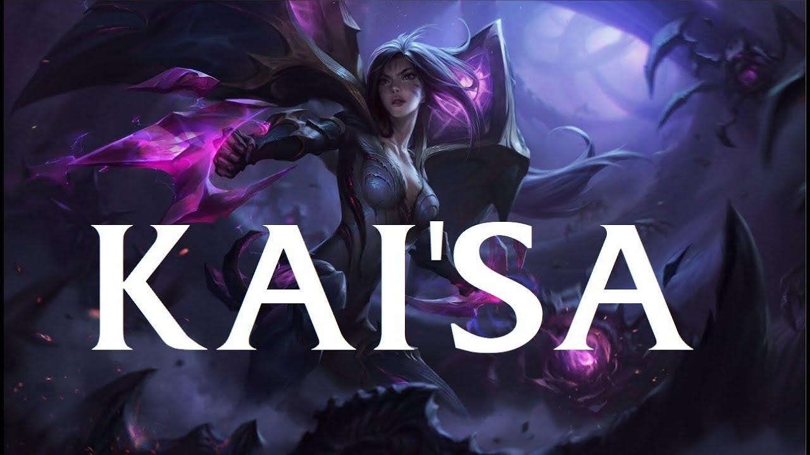
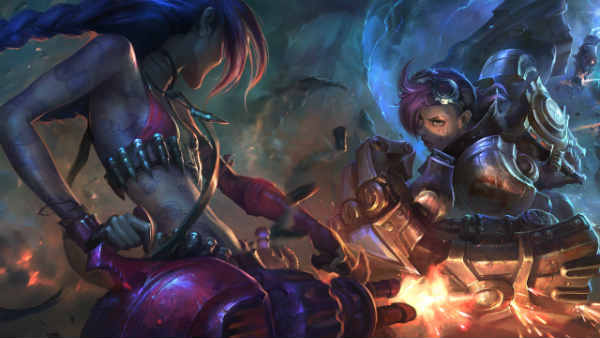
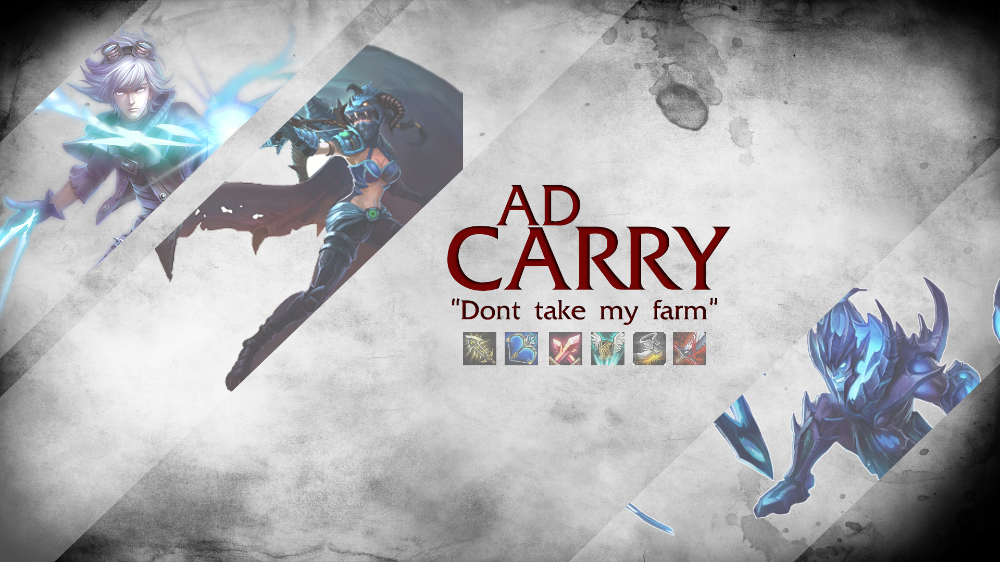

Our ADC guide explains what the ADC role entails, how to play ADC, and tips, tricks and strategy advice to help you get better at ADC.
There’s a lot of pressure playing ADC in League of Legends, but it’s also a role that can carry the team when played exceptionally well. As one of the team’s main damage dealers, it’ll be up to you to bring your fighting power wherever your allies need it: whether it’s taking down other champions, winning team fights or securing powerful objectives such as Baron Nashor.
This guide will give you a robust introduction to ADC, highlight some of the important mechanics you’ll need to master in order to perform well in the role, break down how to play ADC at various points in a game and finally offer some general tips all ADC players should keep in mind.
What does an ADC do?

Champion league of legend : Kai'sa, The Daughter Of Void
An ADC is the primary sustained damage dealer in a League of Legends team. He or she is the champion who relies on powerful auto-attack damage to defeat minions, monsters and opposing champions. Abilities certainly help with their damage output and can often offer some extra utility with stuns, knockbacks, escapes and buffs, but your main aim is to be constantly landing basic attacks or your targets.
It’s a fairly long process to get to the point where you can tear through anything in your path, though. As one of the most item dependent roles in the game, you start off extremely weak and scale up dramatically over the course of a match as you finish important equipment pieces such as Infinity Edge, The Bloodthirster, Blade of the Ruined King and more.
That makes creep farming and gold gathering vitally important to you.
To make this easier, the ADC is almost always paired with a support in the bot lane from the start of a game. This gives you some extra protection and assistance so you can spend your time last-hitting minions in order to collect gold and build into those key items as quickly as possible. Even as the game progresses, though, you’re still one of the easiest targets to kill, so you’ll need to play safe and use your tankier allies to protect you.
That’s especially important to remember when the game opens up and you’re pushing for objectives or looking for team fights. An ADC must always be cautious not to overextend so they are not caught out by the opposing team. Sticking near allies means you’ll be ready to dish out your damage if and when a fight kicks off, or help take down structures in a coordinated attack with your teammates.
Mechanics to master
ADC is one of the most mechanically difficult roles to master, especially when your focus can slip during tense engagements, frantic team fights or when you’ve fallen behind in a game. All can send your poise flying out the window. However, carefully and consistently practising certain mechanics can improve your technique and muscle memory so you pull them off naturally when needed, leaving your mind to focus on the decision making that will allow you to win games.
Last-hitting
The first and most important mechanic to nail down is last-hitting minions. This is the way you’ll generate the majority of the gold you’ll need to purchase items and start improving your power throughout a game. Without good items, you’ll find yourself in an incredibly weak position compared to your opponents and unable to have any worthwhile impact on the game – and that’s especially true with an ADC.
With that in mind, then, practise with ADC champions to learn their attack animations so you can judge exactly the right moment to fire off an auto-attack that will kill a minion and grant you their gold. Also, do give this your full attention during the laning phase over kill-seeking. Missing too many minions is too big a detriment if you waste time trying to find a takedown.
Damage trading
This is a technique that’s almost exclusively relevant in the laning phase of a match, though it can also have applications once the game opens up and you find yourself in a contest with an enemy champion elsewhere. Essentially, this is about dealing more damage to your opponent in a tight window compared to what they can apply to you. It’s one of the ways you can eke out an advantage in lane or suitably weaken a target to set up a kill opportunity with your support.
Teamfighting
Excelling in team fights as an ADC is all about applying damage to the most important targets that are in a comfortable range while keeping yourself safe from death. Positioning, then, is the most vital thing to learn. Teammates may want to scream about not focusing the tank and whatnot, but if that’s the only opponent you can safely attack then do so – don’t overcommit to far into a fight if the enemy team can just collapse onto you and kill you in seconds.
A advanced technique to also practice for team fights and general play is attack-moving. This is where you take small steps between your auto-attack animation, giving you some room to reposition or dodge incoming skill shots. You can also kite many melee champions this way, applying damage to them while they fail to get in range to deal damage themselves.
To help with all of these mechanics, it’s usually best to pick one-to-three ADC champions and play them repeatedly in order to get a strong understanding of how a small few play rather than try to spread yourself across multiple champions. Good, beginner-friendly ADCs include Ashe, Caitlyn and Sivir, while we also have a list of the best ADC champions overall if you want to look at some other potential options.

How to play ADC in the early game
Farm, farm, farm. Last-hitting minions to gather gold should be almost the only thing you’re focusing on in the early game. It’s especially important when playing ADC considering how much you scale with items, so if you can rush to an early B.F. Sword or Bilgewater Cutlass you’ll have a considerable damage bump over your opponents that can help you take some early fights and extend your lead further. It all starts with hoovering up that early gold, though, so control the wave so minions aren’t being lost to tower shots and constantly be repositioning yourself to be ready to last hit dying minions.
If you’re partnered with a support who can catch opponents such as Thresh or Pyke then looking for kills can be a viable strategy too. Just make sure you win some damage trades first to weaken your opponents and coordinate when you’re going to engage together. Having just one player commit and die unnecessarily is something you want to avoid if you could just be farming safely.
How to play ADC in the mid game
As the game opens up you’ll want to start looking to take objectives and push structures. If you’ve won or are winning in bot lane then definitely move in to destroy the turret. Then, it might be wise to move around the map or swap with top lane so you can have a numbers advantage there. You can also consider taking Dragon if you kill or otherwise frighten off your bot lane opponents. Pinging the jungler or mid lane to help you with this is often the smart thing to do.

How to play ADC in the late game
For the most part, you’ll want to stick nearby the rest of your team during this phase of the game as getting caught out by an enemy champion could be disastrous for your allies – especially with death timers so high. Do feel free to claim your side’s red buff on your own whenever you see it’s up, but make sure it’s safe to do so first.
At this point, though, your team is looking for the engagement that can win the game, so be prepared to team fight. Trying to claim or contest Baron Nashor can often trigger this decisive fight, so be ready to move there if your team or the opponents are looking to kill it.